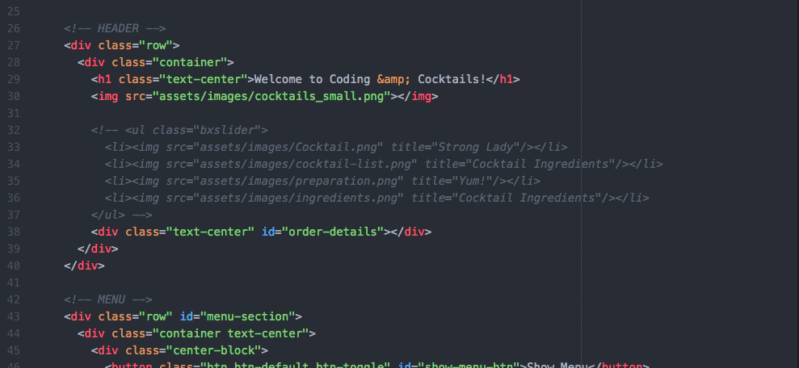

Part 4: Content Slider
Next you'll add in a content slider to the page. This is very useful to scroll through pictures, text, videos or any other html items on a website. This project will utilize a library called bxSlider.
In the index.html file, on line 26, find the HEADER section. On line 32 you'll find a commented out unordered list HTML element
<ul>with a class of "bxslider" and four list items<li>. Uncomment the HTML markup (see GIF below). The bxSlider library is already included in the project for you as well as the necessary HTML markup. You’re going to add the interactivity!
First, connect the bxSlider JavaScript file and CSS styling to the index.html file so everything will work! The JavaScript file (jquery.bxslider.min.js) and the CSS file (jquery.bxslider.min.css) are located in the assets/lib/jquery.bxslider directory.
Don’t forget - JavaScript additions use a
<script>tag while CSS additions use a<link>tag!See step 1 of the “How to Install” section on bxslider.com for further guidance.
Look at the index.html file and find the unordered list element
<ul>with abxsliderclass to identify the markup for the slider.In Atom, in the my-scripts.js file, call the bxSlider on your content. Hint: See step 3 of the “How to Install” section on bxslider.com
Try making some modifications to how your slider works:
- Change the mode of the slider to 'vertical'. Hint: bit.ly/bxSExample:
Add captions to your images. Hint: bit.ly/bxSOpts
Check your slider against the answer key here: bit.ly/jQFinal
Congratulations! You created an interactive website!